写日记！！！
我有一个木匣子，里面装满小心事。
我这小箱子里的日记是从18岁开始的。
20岁以前，写的日记都是抒发情感的，多是“他好帅，我好喜欢他！”、“原来他是个人渣”、“我好难过”这样的句子，出发点也总是“我我我”，没有事实、场景和对话，以至于现在翻出来，完全想不起当时的情况。
以前还喜欢把亦舒言情小说里的句子抄在小本子上，你看，那个时候就踏上了伪文艺的道路。
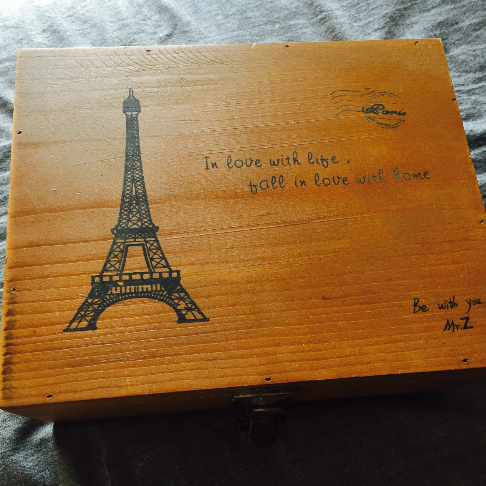我是个话多的人，但如果找不到聊得来的人，我宁愿与自己对话———
第一本日记。
刚刚过去的高中三年，即将到来的大学生活。
要和很多人说再见，也要和很多人说你好。
这不就是人生么。
第二本日记。
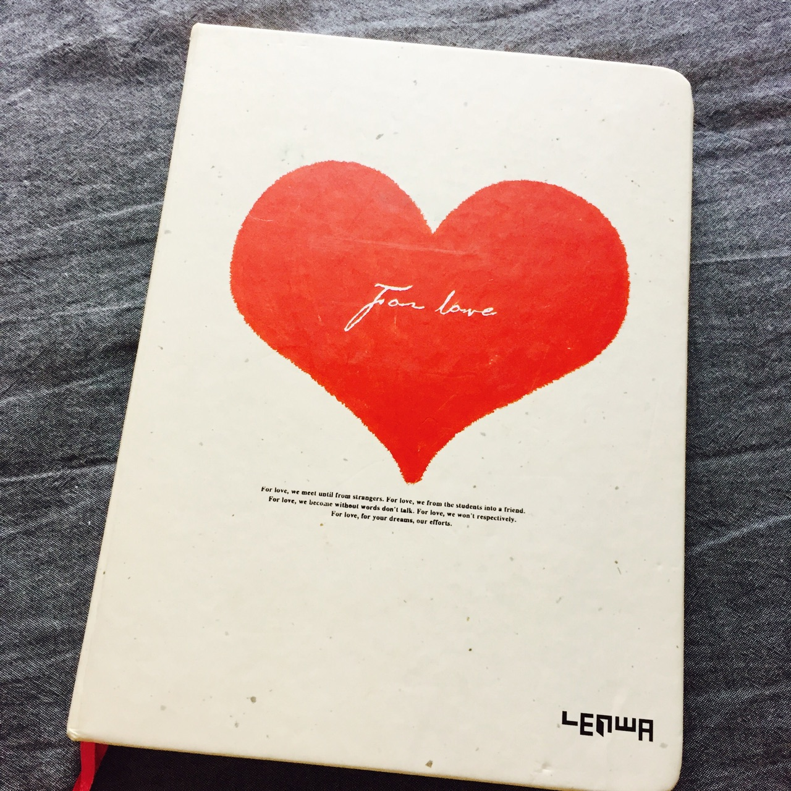满满的初恋味道。
那个人说过的话，走过的路，看过的书，推荐过的电影，统统成了我的人生大事。
我要去一一走一遍、看一遍、尝试一遍。
情侣之间最浪漫的事是什么？
我想，是写诗吧。
把他的名字嵌入诗中，写在小卡片上，扭扭捏捏地递给他。
他说，好美。
是啊，初恋好美。
第三本日记。
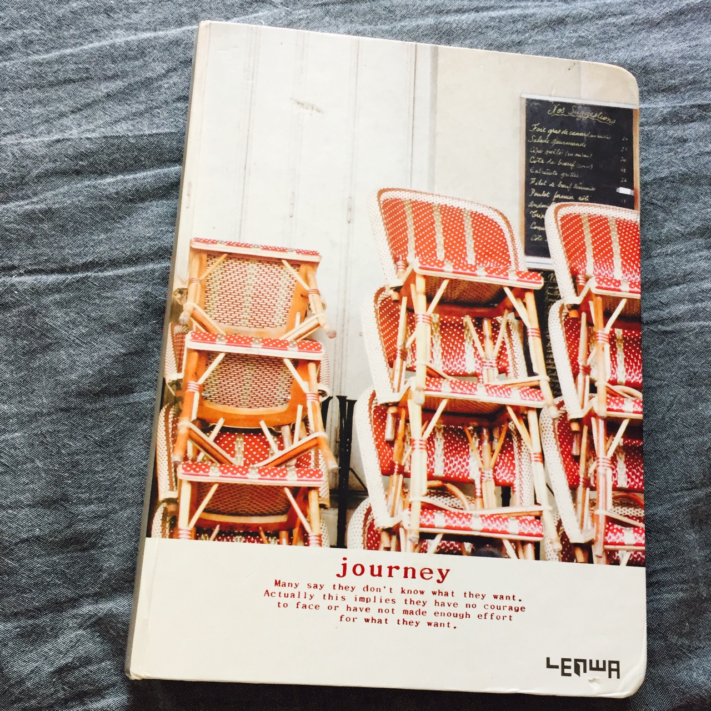当初说要一起走下去的人，还是在中途说了再见。
哭过、闹过、难受过、自我折磨过，以为自己会恨，写出来竟是多了些许反思。
很好。
日记的后半部分，也慢慢变得平实。
像这样：
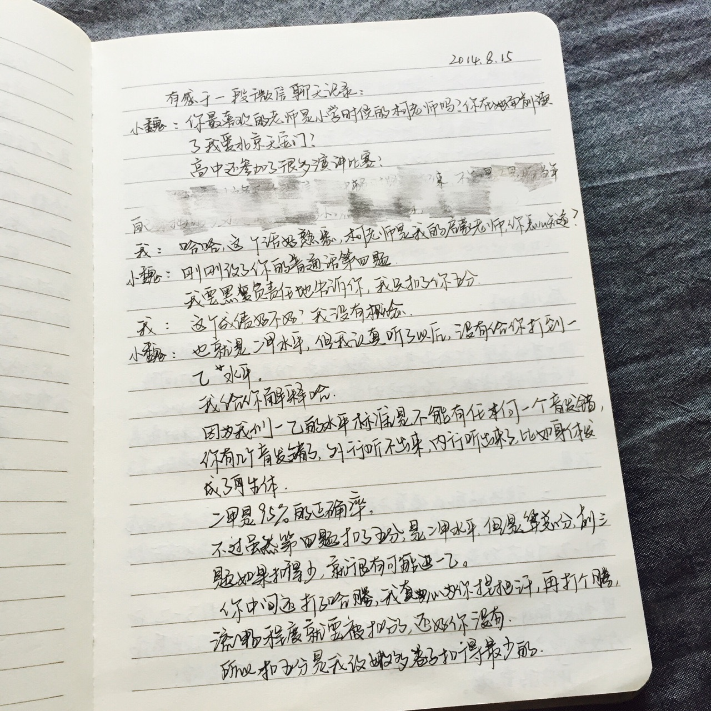第四本日记。
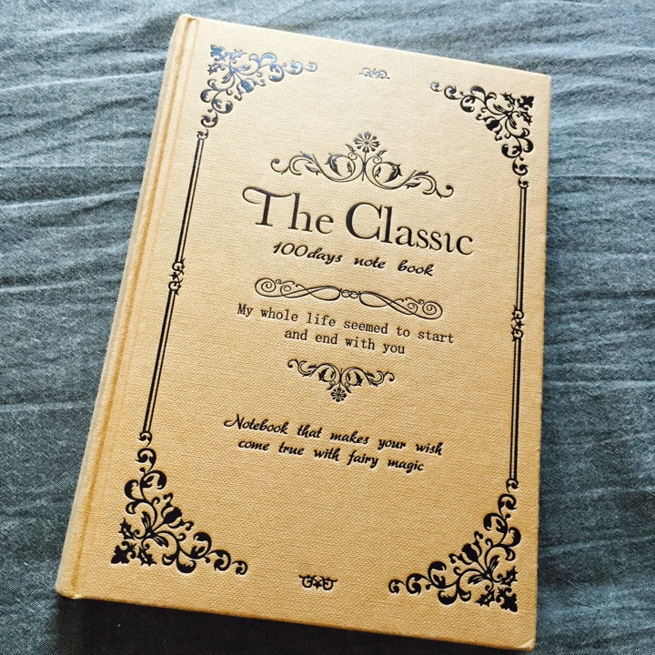从校园步入社会，写日记的频率慢了一些。
日记本里还夹着舍不得扔的糖纸，看来内心还是少女。
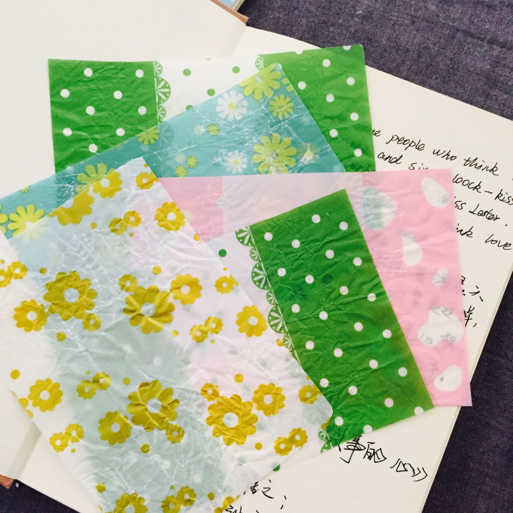第五本日记。
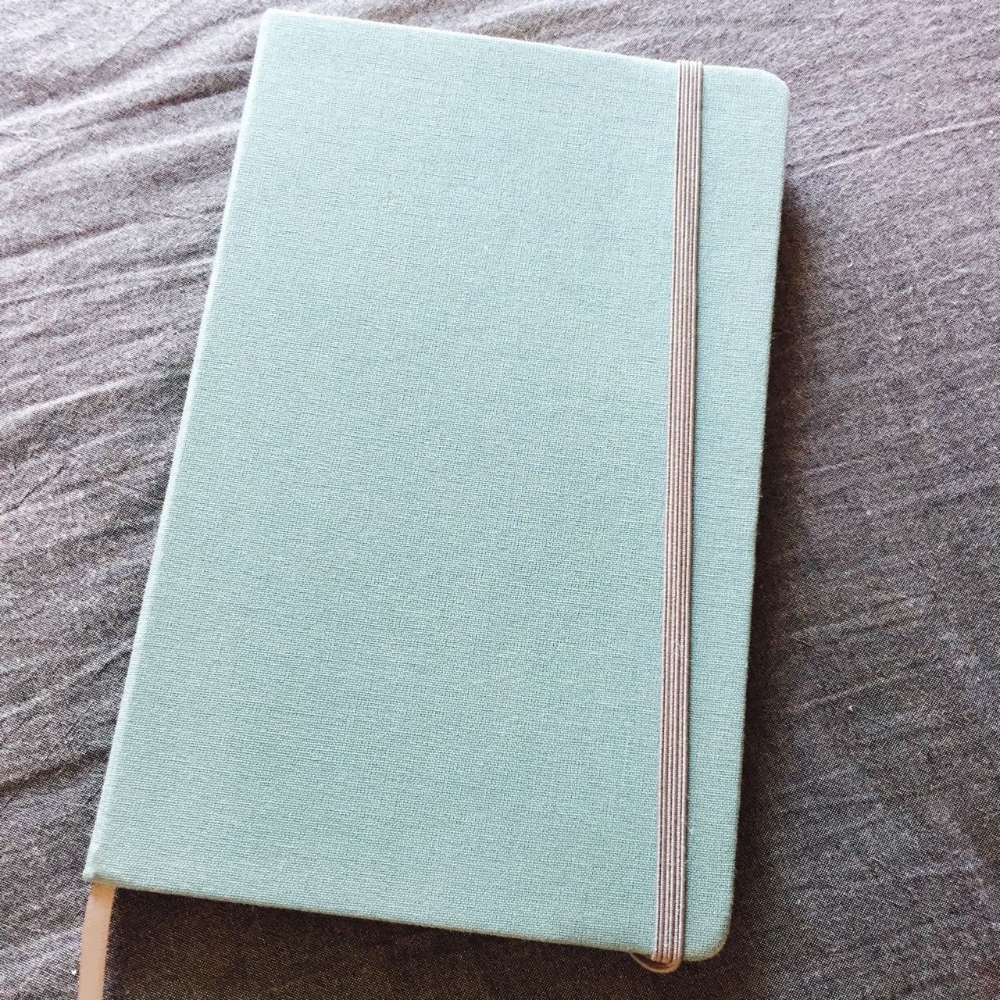有意思的是，这个本子从第一页开始就写反了，于是，我在第一页写了这么几句话：
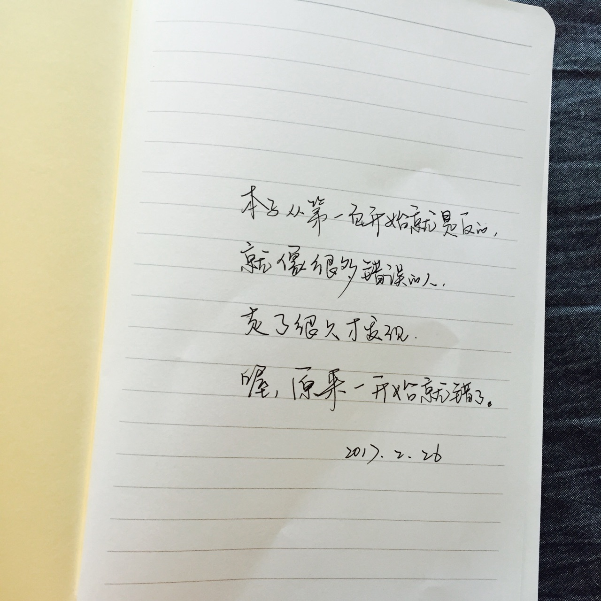这本日记又见证了一段感情的由胜到衰的过程，现在看到那些对话，还不免为之一动：
比如：
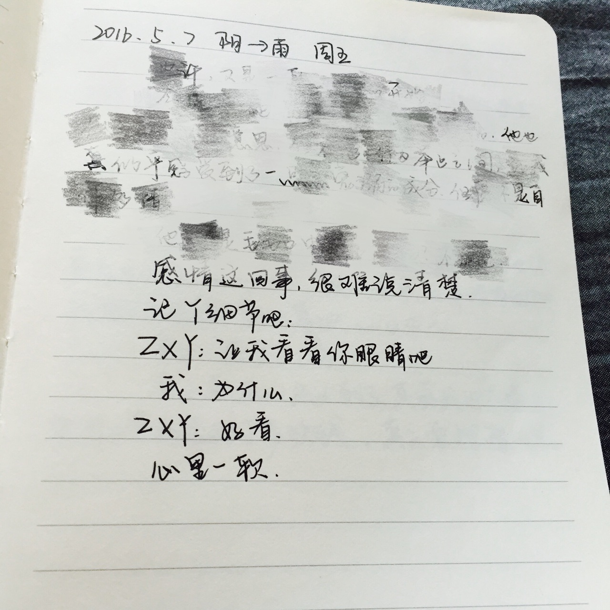从最开始的怦然心动，到在一起后的慢慢疏远，这个本子几乎完整地还原了这段感情的变化。所以日记本是个很残酷的见证人。
第六本日记。
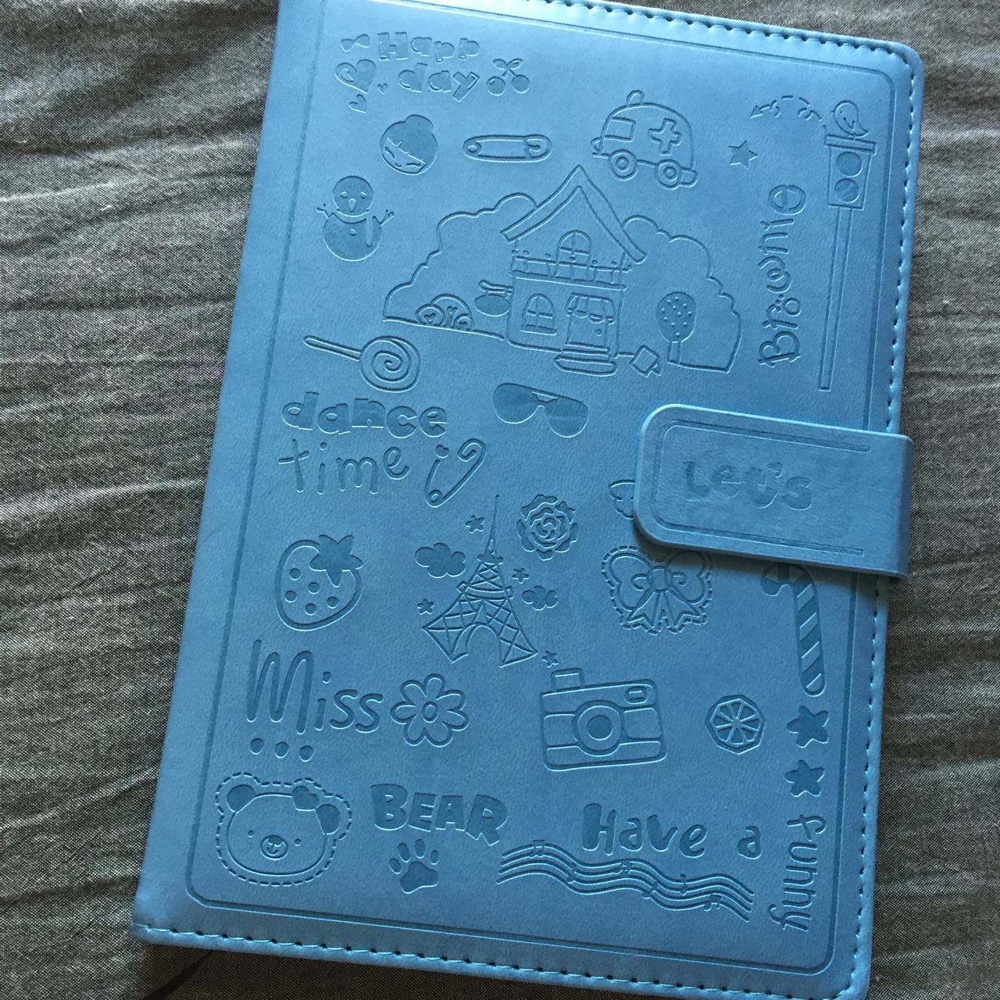选的日记本越来越不注重样式，字倒是有所长进。
日记中，多了很多对周边人、事的顾忌。
也许，是长大了。
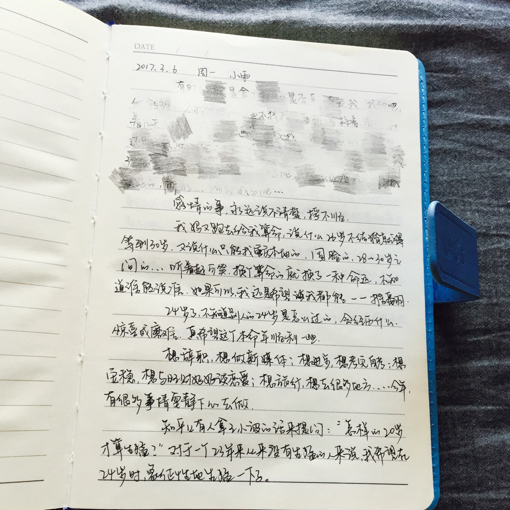以前看过一段话： 写日记是每天和自己对话的神圣时刻，一个人如果都懒得和自己说话沟通，那怎么可能是一个有趣的人呢？当我们在人生路上走了很远的时候，日记就是我们的足迹。
———
更多精彩文章，请搜索个人微信公众号：多言集
很高兴你能来，也不遗憾你离开。